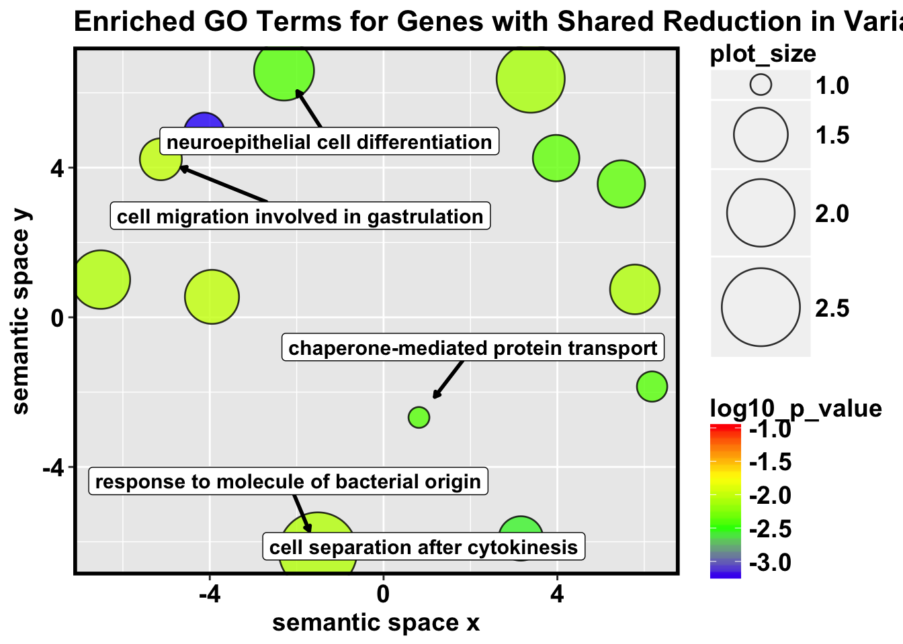

library(ggrepel)## Loading required package: ggplot2library(ggplot2)
library(tidyverse)## ── Attaching packages ────────────────────────────────── tidyverse 1.2.1 ──## ✔ tibble 1.4.2 ✔ purrr 0.2.4
## ✔ tidyr 0.7.2 ✔ dplyr 0.5.0
## ✔ readr 1.1.1 ✔ stringr 1.3.0
## ✔ tibble 1.4.2 ✔ forcats 0.2.0## ── Conflicts ───────────────────────────────────── tidyverse_conflicts() ──
## ✖ dplyr::filter() masks stats::filter()
## ✖ dplyr::lag() masks stats::lag()library(data.table)## -------------------------------------------------------------------------## data.table + dplyr code now lives in dtplyr.
## Please library(dtplyr)!## -------------------------------------------------------------------------##
## Attaching package: 'data.table'## The following objects are masked from 'package:dplyr':
##
## between, first, last## The following object is masked from 'package:purrr':
##
## transposelibrary(edgeR)## Loading required package: limmalibrary("limma")
#Revigo Processing Higher Heart
# A plotting R script produced by the REVIGO server at http://revigo.irb.hr/
# If you found REVIGO useful in your work, please cite the following reference:
# Supek F et al. "REVIGO summarizes and visualizes long lists of Gene Ontology
# terms" PLoS ONE 2011. doi:10.1371/journal.pone.0021800
bjp<-
theme(
panel.border = element_rect(colour = "black", fill = NA, size = 2),
plot.title = element_text(size = 16, face = "bold"),
axis.text.y = element_text(size = 14,face = "bold",color = "black"),
axis.text.x = element_text(size = 14,face = "bold",color = "black"),
axis.title.y = element_text(size = 14,face = "bold"),
axis.title.x = element_text(size = 14,face = "bold"),
legend.text = element_text(size = 14,face = "bold"),
legend.title = element_text(size = 14,face = "bold"),
strip.text.x = element_text(size = 14,face = "bold"),
strip.text.y = element_text(size = 14,face = "bold"),
strip.background = element_rect(colour = "black", size = 2))
# --------------------------------------------------------------------------
# Here is your data from REVIGO (replace with your GO results)
revigo.names <- c("term_ID","description","frequency_%","plot_X","plot_Y","plot_size","log10_p_value","uniqueness","dispensability");
revigo.data <- rbind(c("GO:0002237","response to molecule of bacterial origin", 1.841,-1.512,-6.258, 2.505,-2.0630,0.855,0.000),
c("GO:0032908","regulation of transforming growth factor beta1 production", 0.052,-5.150,-4.377, 1.000,-3.2676,0.788,0.000),
c("GO:0000920","cell separation after cytokinesis", 0.098, 3.159,-5.911, 1.255,-2.5591,0.830,0.007),
c("GO:0072321","chaperone-mediated protein transport", 0.052, 0.814,-2.677, 1.000,-2.3925,0.814,0.007),
c("GO:1904903","ESCRT III complex disassembly", 0.058, 6.180,-1.851, 1.041,-2.3925,0.766,0.024),
c("GO:0001829","trophectodermal cell differentiation", 0.081,-4.128, 4.932, 1.176,-3.2366,0.715,0.092),
c("GO:1901889","negative regulation of cell junction assembly", 0.115, 5.472, 3.565, 1.322,-2.3625,0.733,0.093),
c("GO:0016447","somatic recombination of immunoglobulin gene segments", 0.254,-6.508, 1.008, 1.653,-2.0711,0.758,0.135),
c("GO:0009954","proximal/distal pattern formation", 0.179,-3.950, 0.547, 1.505,-2.0123,0.760,0.143),
c("GO:0060563","neuroepithelial cell differentiation", 0.283,-2.291, 6.594, 1.699,-2.3936,0.760,0.181),
c("GO:0039702","viral budding via host ESCRT complex", 0.110, 3.971, 4.255, 1.301,-2.3595,0.700,0.231),
c("GO:0071800","podosome assembly", 0.133, 5.784, 0.746, 1.380,-2.0726,0.745,0.309),
c("GO:0043901","negative regulation of multi-organism process", 0.600, 3.385, 6.378, 2.021,-2.1101,0.778,0.350),
c("GO:0042074","cell migration involved in gastrulation", 0.087,-5.126, 4.224, 1.204,-2.0123,0.700,0.387));
one.data <- data.frame(revigo.data);
names(one.data) <- revigo.names;
one.data <- one.data [(one.data$plot_X != "null" & one.data$plot_Y != "null"), ];
one.data$plot_X <- as.numeric( as.character(one.data$plot_X) );
one.data$plot_Y <- as.numeric( as.character(one.data$plot_Y) );
one.data$plot_size <- as.numeric( as.character(one.data$plot_size) );
one.data$log10_p_value <- as.numeric( as.character(one.data$log10_p_value) );
one.data$frequency <- as.numeric( as.character(one.data$frequency) );
one.data$uniqueness <- as.numeric( as.character(one.data$uniqueness) );
one.data$dispensability <- as.numeric( as.character(one.data$dispensability) );
# --------------------------------------------------------------------------
# This is a table indicating which labels you would like to plot (all data will be plotted, but you need to indicate whether the label should be displayed), make this table manually.
#fread("plot.labels.txt", sep="\t",stringsAsFactors = FALSE,header=T,data.table=FALSE) %>% filter(Plot=="Yes")
label.keep <- c(1, 3, 4, 10, 14)
#label.keep=c("trophectodermal cell differentiation")
ex <- one.data %>% filter(description %in%label.keep)
ex <- one.data[label.keep,]
ggplot(data = one.data)+
geom_point( aes( plot_X, plot_Y, fill = log10_p_value, size = plot_size),shape=21,color="black",stroke=0.7, alpha = 0.8) +
scale_fill_gradientn( colours = c("blue", "green", "yellow", "red"), limits = c( min(one.data$log10_p_value), -1) )+
scale_size( range=c(5, 20)) +labs (y = "semantic space y", x = "semantic space x")+
geom_label_repel(data=ex, aes(plot_X, plot_Y, label = description),
fontface = 'bold', color = 'black',
box.padding = 0.6, point.padding = 1.6,
size = 4,
# Width of the line segments.
segment.size = 1,
# Strength of the repulsion force.
force = 1,
arrow = arrow(length = unit(0.01, 'npc')), max.iter = 3e3)+bjp + ggtitle("Enriched GO Terms for Genes with Shared Reduction in Variation from Day 0 to 1 (391 genes)")